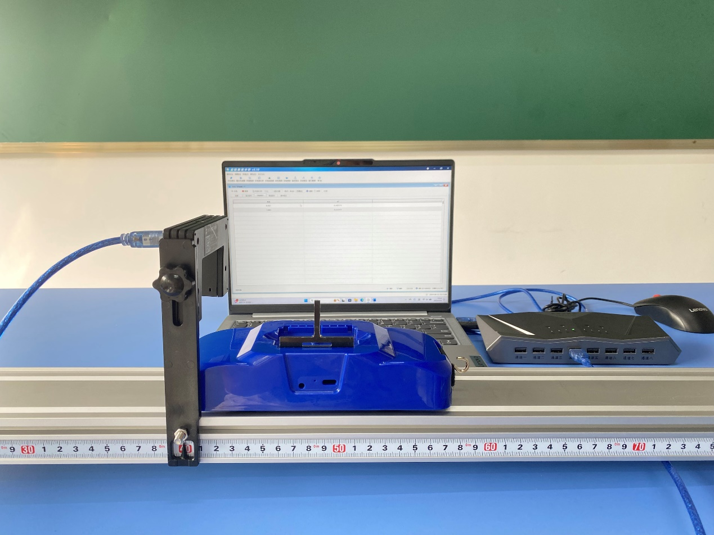
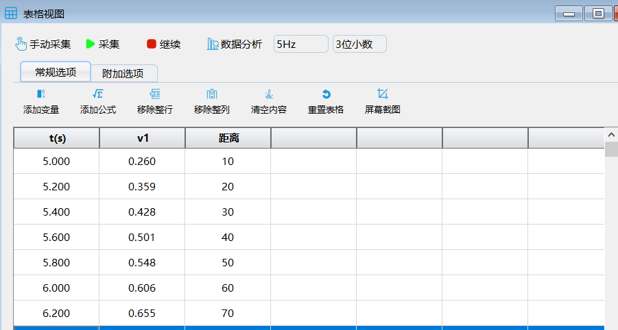
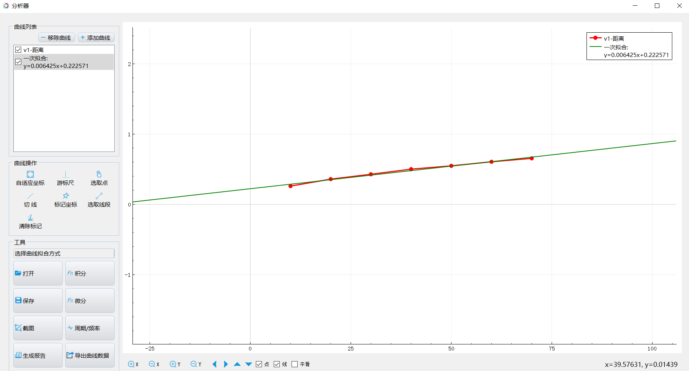

实验十 瞬时速度的测量
【实验目的】
理解和掌握瞬时速度的概念，培养学生动手能力。
【实验原理】
瞬时速度表示物体在某一时刻或经过某一位置时的速度，该时刻相邻的无限短时间内的位移与通过这段位移所用时间的比值v=△x╱△t。瞬时速度是矢量，既有大小又有方向。瞬时速度是理想状态下的量。
【实验器材】
数据采集器、光电门传感器、计算机、多用力学导轨、小车等。
【实验装置】

【实验操作步骤】
1.搭建好实验环境，将光电门传感器固定在力学导轨上，在小车上安装4mm的挡光片，调整光电门传感器的高度，确保挡光片可以顺利的触发光电门传感器工作；
2.打开实验数据分析软件，连接好数据采集器和光电门传感器；
3.让小车从高处滑下，待小车停止后，点击“暂停”，光电门此时测出的是小车经过光电门的瞬时速度；
4.改变小车与光电门的距离，重复步骤3，多次测出小车的瞬时速度，并总结规律。

实验数据

不同距离下经过同一点的瞬时速度
【思考与讨论】
测量瞬时速度还可以用什么方法呢？